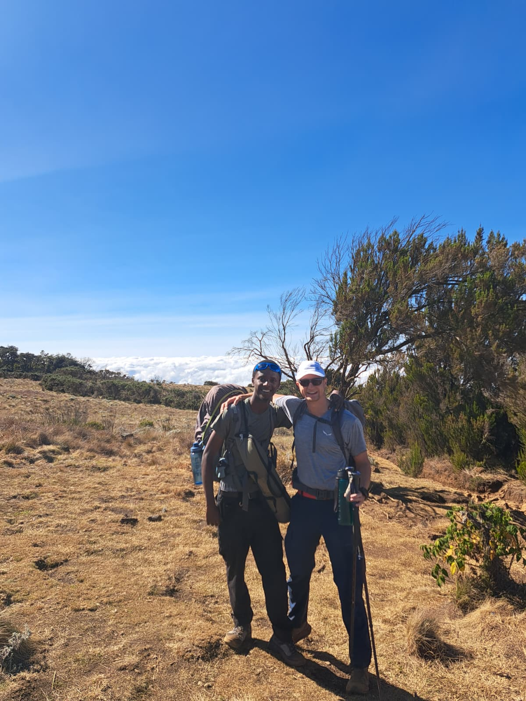

Scenic landscapes
Experience changing scenery as the trail moves from forest environments toward the high mountain zones.
MACHAME ROUTE • MOUNT KILIMANJARO
Experience one of Kilimanjaro's scenic trekking routes, moving from forest trails toward the high mountain landscapes above the clouds.
THE MACHAME EXPERIENCE
Machame takes you through a changing mountain environment, from lower forest trails to the high alpine landscapes surrounding Kilimanjaro's summit.

WHY MACHAME
One of the special parts of a Kilimanjaro trek is watching the environment change as you gain altitude.
On the Machame Route, the journey can take you from lush forest surroundings into open moorland, alpine landscapes and the dramatic high-altitude environment near the summit.
The experience is not only about the final summit. It is about adapting to the mountain, moving at a steady pace and discovering how Tanzania's landscape changes above you.
ROUTE CHARACTER
Experience changing scenery as the trail moves from forest environments toward the high mountain zones.
Spend the trekking nights in mountain camps rather than mountain huts.
The route gives travelers time to experience the mountain step by step as they gain altitude.
THE JOURNEY
Each day brings a different environment, pace and perspective as you move higher toward Kilimanjaro's summit.
DAY 1
Begin the trek through the mountain forest, following the trail from Machame Gate toward the first mountain camp.
DAY 2
Leave the forest behind as the landscape opens into moorland and higher mountain terrain.
DAY 3
Continue across the Shira Plateau before approaching the higher alpine environment around Barranco.
DAY 4
Tackle the Barranco Wall and continue through the high mountain landscape toward Karanga Camp.
DAY 5
Continue toward Barafu Camp, the high-altitude base for the summit attempt. The focus shifts toward rest, preparation and conserving energy.
DAY 6
Begin the summit attempt in the early hours, reaching Uhuru Peak before descending through the mountain toward Mweka Camp.
DAY 7
Descend through the forest to Mweka Gate, where the trek comes to an end.
Important: Trekking times, camps and daily arrangements may vary according to mountain conditions, park regulations, safety considerations and the pace of the group.
PLAN YOUR TREK
Tell us your preferred travel dates and group size. We can help you understand the route and plan the next step.